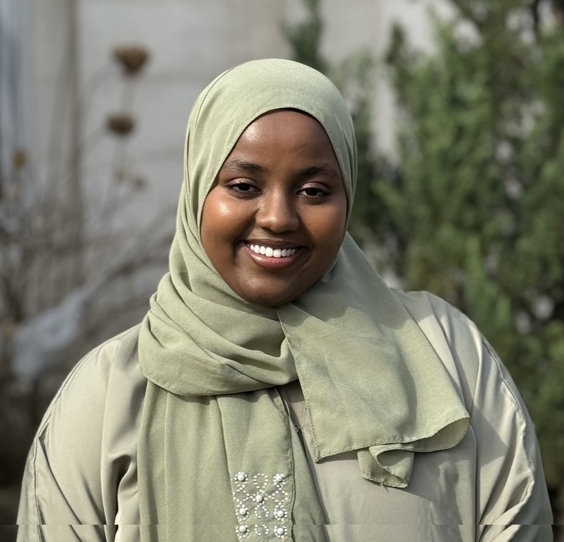
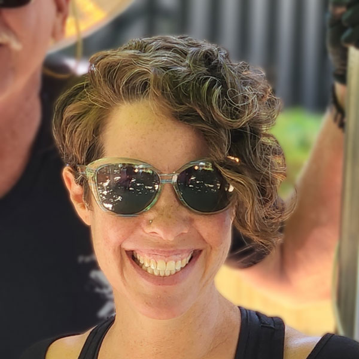

Our story, our mission, and the people behind Gobyahan.
Dear Visitor,
Welcome to Gobyahan. A trip to the vast landscape of Somaliland and the Horn of Africa. A walk with ferocious storytellers of the past and the present. A journey of exhuming and preserving Somali culture.
The world the Gobyahandhoore, our valley bird, once roamed freely is experiencing degradation because of climate change. The songs, poems, customs, and traditions that carried the stories of the past are in danger of being lost forever.
But there is a generation that refuses to let that happen. Young Somalis, fierce and hungry, who want to tell these stories before they disappear. Young people like Hodan, who studied architecture because filmmaking was never offered as a path, but who directed her first film the moment someone opened the door. Like Awo, who traveled over an hour each way to a workshop she could not afford, because something in her knew it mattered. Like Daud, whose family was scattered by drought, who found his place in the world behind a sound mixer.
Gobyahan exists for them. To give young Somali storytellers the tools, training, and platforms to tell their own stories, build real careers, and ensure that Somali voices shape how their world is understood.
The stories are still here. So are the storytellers. We are just making sure they find each other.
Nimco YuusufFounder, Gobyahan


Gobyahan trains young Somali filmmakers to tell their own stories, preserving cultural heritage and raising awareness of the impact of climate change on Somali communities and ways of life.
A future where Somali voices lead the global narrative on climate change, culture, and resilience. Where young Somali storytellers are not only documenters of their realities, but active shapers of how their histories, struggles, and futures are understood. Where storytelling is not just a tool for cultural survival, but a viable path, one where young Somali filmmakers have real opportunities, real careers, and the ability to make a living from their craft.
Gobyahan is led by Founder and Executive Director Nimco Yuusuf and governed by a board that provides strategic oversight and organizational guidance.


Founder & Executive Director
Nimco Yuusuf is a filmmaker from Somaliland whose work is rooted in Somali oral storytelling traditions and explores themes of identity, culture, migration, and belonging. She holds an MFA in Film Production from Ohio University, is a Mastercard Foundation Scholar, and is a recipient of the Ohio Legislative Service Commission Media Fellowship.
Her films have screened nationally and internationally. My Mother's Daughter premiered at the Athens International Video and Film Festival. Henna Stain screened at national and international festivals and was nominated for Ohio Shorts 2025. She is currently in post production on Xergayn, a documentary following a Somali truck driver in Ohio whose nomadic upbringing mirrors the mobility and isolation of his current profession.
She founded Gobyahan because she believes that the people closest to a story should have the opportunity to tell it themselves.
Board Member & Advisor
Christine Dindia is a project and operations professional with extensive experience in program management, organizational operations, and strategic communications across nonprofit and education settings. She has held leadership roles including Marketing Director at The First Tee of Silicon Valley, Operations Officer at the University of California Santa Cruz, and Compliance and Special Projects Senior Manager at Daybreak. As a board member and advisor, she supports Gobyahan's strategic planning, partnerships, and program execution.